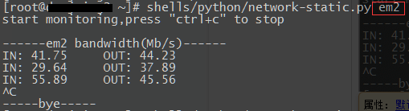
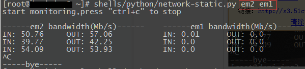
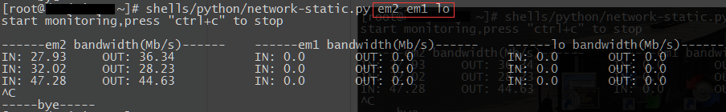

查看Linux服务器网卡流量小脚本shell和Python各一例
查看Linux服务器网卡流量小脚本shell和Python各一例
有时我们需要较为实时的查看服务器上的网卡流量，这里我写了两个小脚本，一个用shell（先写的，一次只能查看一个网卡），另一个用Python（后写的，一次可查看多个网卡）。脚本中都用了while true“死循环”，每隔10s从“/proc/net/dev”中取一次值并根据10s内的差值计算10s内的平均带宽；按ctrl+c停止执行。脚本兼容centos6和7
两个脚本都不太复杂，而且脚本中注释也比较细致，所以我就不过多解释脚本内容了。直接上图上脚本：
shell版--使用截图：
shell版代码：
1 2 3 4 5 6 7 8 9 10 11 12 13 14 15 16 17 18 19 20 21 22 23 24 25 26 | #!/bin/sh#by ljk 20160526if [ "$1" = "" ];then #判断后面是否有跟参数 echo -e "\n use interface_name after the script,like \"script eth0\"...\n" exit -1fiecho -e "\n start monitoring the $1,press \"ctrl+c\" to stop"echo ----------------------------------------------------------file=/proc/net/dev #内核网卡信息文件while true do RX_bytes=`cat $file|grep $1|sed 's/^ *//g'|awk -F'[ :]+' '{print $2}'` #这里sed这一步为了同时兼容centos6和7 TX_bytes=`cat $file|grep $1|sed 's/^ *//g'|awk -F'[ :]+' '{print $10}'` sleep 10 RX_bytes_later=`cat $file|grep $1|sed 's/^ *//g'|awk -F'[ :]+' '{print $2}'` TX_bytes_later=`cat $file|grep $1|sed 's/^ *//g'|awk -F'[ :]+' '{print $10}'` #B*8/1024/1024=Mb speed_RX=`echo "scale=2;($RX_bytes_later - $RX_bytes)*8/1024/1024/10"|bc` speed_TX=`echo "scale=2;($TX_bytes_later - $TX_bytes)*8/1024/1024/10"|bc` printf "%-3s %-3.1f %-10s %-4s %-3.1f %-4s\n" IN: $speed_RX Mb/s OUT: $speed_TX Mb/sdone |
Python版--使用截图：



Python版代码：
1 2 3 4 5 6 7 8 9 10 11 12 13 14 15 16 17 18 19 20 21 22 23 24 25 26 27 28 29 30 31 32 33 34 35 36 37 38 39 40 41 42 43 44 45 46 47 48 49 50 | #!/bin/env python3#by ljk 20160526import os,re,sys,timeif len(sys.argv) == 1: print('\n使用方法：请跟上网卡名称,可接"单个网卡"/"多个网卡,以空格分开".\n') sys.exit(100)else: print('start monitoring,press "ctrl+c" to stop\n') for arg in sys.argv[1:]: #输出标头 header = '------{} bandwidth(Mb/s)------'.format(arg) print(header.ljust(35),end='') print() #global values_dic values_dic = {} #定义空字典，用来在下面函数中存放各网卡的各项需要用到的值 def get_values(orders): try: with open('/proc/net/dev') as f: lines=f.readlines() #内容不多，一次性读取较方便 for arg in sys.argv[1:]: for line in lines: line=line.lstrip() #去掉行首的空格，以便下面split if re.match(arg,line): values = re.split("[ :]+",line) #以空格和:作为分隔符 values_dic[arg+'r'+orders]=values[1] #1为接收值 values_dic[arg+'t'+orders]=values[9] #9为发送值 #return [values[1],values[9]] #可返回列表 except (FileExistsError,FileNotFoundError,PermissionError): print('open file error') sys.exit(-1) try: while True: get_values('first') #第一次取值 time.sleep(10) get_values('second') #10s后第二次取值 for arg in sys.argv[1:]: r_bandwidth = (int(values_dic[arg+'r'+'second']) - int(values_dic[arg+'r'+'first']))/1024/1024/10*8 t_bandwidth = (int(values_dic[arg+'t'+'second']) - int(values_dic[arg+'t'+'first']))/1024/1024/10*8 print('IN: '+str(round(r_bandwidth,2)).ljust(8)+' OUT: '+str(round(t_bandwidth,2)).ljust(16),end='') print() values_dic = {} #清空本次循环后字典的内容 except KeyboardInterrupt: print("\n-----bye-----") |
这俩脚本使用起来都还是很方便实用的，共享出来希望能给朋友们工作中带来一点方便。
本文出自 “奋进的K” 博客，请务必保留此出处http://kaifly.blog.51cto.com/3209616/1783530
 |
 |
| wozhangkun、yue8803、bearmimi001 | 8人 |
了这篇文章 |